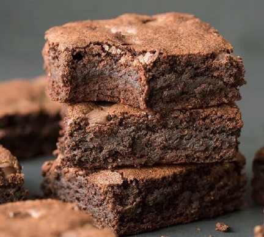

Brownie Recipe

Recipe Data
| Yield |
16 servings |
| Prep time |
10 minutes |
| Cook time |
30 minutes |
| Ready |
60 minutes |
Ingredients
- 1/2 Cup of butter
- 2 Oz Unsweetened chocolate
- 1 Cup of sugar
- 1 tsp vanilla extract
- 2 Large eggs
- 3/4 All-purpose clour (sifted)
- 1/2 Cup of Chopped Walnuts
Cooking directions
- Preheat oven to 350 Degrees F
- In medium saucepan, melt butter and chocolate
- Remove from heat, stir in sugar
- Fold in eggs, carefully one at a time.
- Add vanilla, stir in flour and nuts, mix well.
- Spread mixture into greased pan, bake at 350 for 30 minutes, let cool, cut and serve!